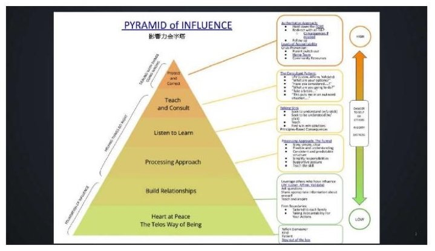
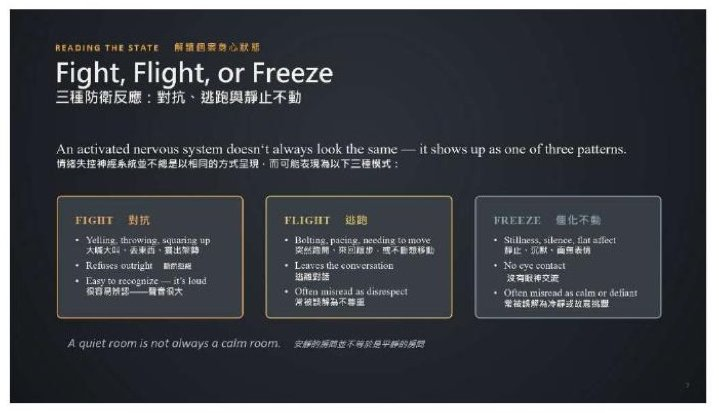
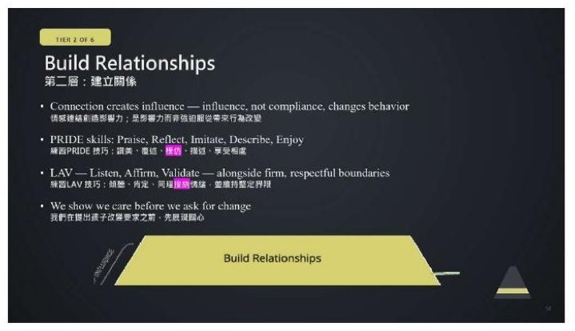
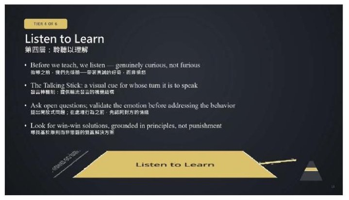
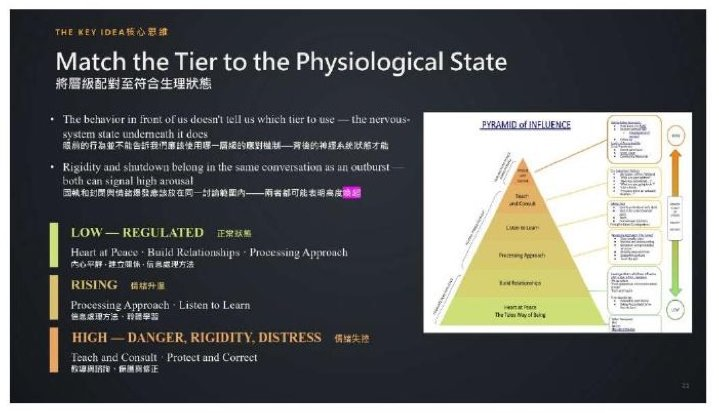

如何透過關係、理解和技能發展影響青少年
Influencing Adolescents Through Relationships, Understanding, and Skill Development
Drew Davis
美國猶他州 Telos 北校區臨床總監
決定怎麼回應的不是孩子做了什麼，而是他當下的身體狀態。
Drew Davis 把當天前兩場接起來：理解孩子為什麼卡住、教他新的技能。這兩件事都還沒回答大人最難的那一題——衝突發生的那幾秒鐘，到底該怎麼回應。他的答案是一座六層的影響力金字塔，而選哪一層看的不是行為本身，是孩子當下的身體狀態。
- 本場錄音自講者的致謝語中途開始，開場的第一句話沒有錄到。
- 本場錄音中沒有出現現場問答。
重點整理
01理解、教技能，然後是影響

- 理解讓我們知道孩子為什麼卡住，教技能給他新的能力，但兩者都沒告訴大人在當下該怎麼回應。
- 他把當下能做的事整理成六層的影響力金字塔，由下而上，愈上層愈指令式，也應該用得愈少。
- 他希望聽眾帶走三件事：回應要隨孩子的神經系統狀態調整、六個層級各要求大人什麼、當下怎麼替眼前的孩子選對層級。
Understanding tells us why a young person is struggling
本盟譯理解讓我們知道一個孩子為什麼陷入困難。
02先讀狀態，再決定怎麼回應

- 多數行為計畫預設孩子隨時有一個冷靜、能講理的大腦；但在感官超載或當機時，那塊大腦會暫時斷線。
- 他帶過一個智力很高的學生，平靜時能把規則一字不差地複述，一崩潰就完全調不出來。
- 他的紀律是：開口之前先花三秒鐘讀對方的呼吸、語調、姿勢和眼神，那比對方說的話更能判斷狀態。
- 激動不一定看起來很大聲：對抗最好認，逃跑常被大人讀成不尊重，僵住最常被漏掉。
student with autism who goes still and quiet during a sensory overload is not being defiant
本盟譯一個自閉症學生在感官超載時變得安靜不動，不是在對抗。
03先有平靜與關係，才有影響力

- 最底層是大人自己的平靜：失調的大人沒辦法幫失調的青少年調節，我們的平靜在開口之前就已經是第一個介入。
- 面對一名提高音量、拒絕轉換活動的學生，工作人員指令一個字沒改，只降低自己的音量、放慢呼吸，約三十秒後學生也跟著降下來。
- 第二層是建立關係：連結創造影響力，長期真正改變行為的是影響力而不是服從。
- 一名新生帶著防衛心到校，團隊連續數週不強推、只是陪著；轉折點是他主動問工作人員明天還會不會來。
In short, we show we care before we ask for change.
本盟譯簡單說，我們在要求孩子改變之前，先讓他看見我們在乎。
04先聽再教，別急著糾正

- 第四層是聆聽以理解：教之前先聽，而且要帶著真誠的好奇，不是帶著火氣。
- 他們用一支發言棒標示現在輪到誰說話，對抓不準對話節奏的青少年特別有效。
- 有學生要求把同組同學調走，工作人員只請他從頭說一遍發生了什麼事，講出來的其實是午餐時被排除在對話外。
- 第五層是教導與諮詢，角色是顧問不是指揮官：問他有哪些選項、打算怎麼做，孩子自己想出來的辦法才用得下去。
We would have missed that completely if we had addressed the behavior before we listened to what was underneath that.
本盟譯如果我們在聽見行為底下是什麼之前就先處理行為，這一段會完全被錯過。
05最高的一層是例外

- 第六層保護與修正是最小的一層，只用在對自己或他人有危險、極度固執或急性痛苦的時候，而且每次用完一定要做事後回顧。
- 真的動手的那一刻，讓場面不變成危機的多半仍然是口語：有同理而不評斷、尊重個人空間、界線少而清楚、多給幾秒鐘。
- 老師遇到學生掀桌，先求援並平靜疏散同學；家長遇到孩子摔門說想傷害自己，先帶開其他孩子、穩住自己的聲音再找可信任的大人。
- 決定用哪一層的不是行為，是行為底下的身體狀態；同一個孩子、同一天，用的層級就會不同。
現場問答
本場錄音中沒有出現現場問答。
帶走的一句
I hope the Pyramid of Influence gives you one more framework
本盟譯希望影響力金字塔能多給你一個帶得走的架構。